| 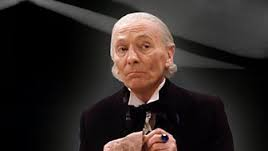 | 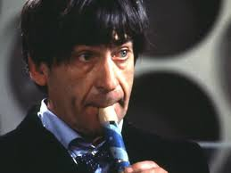 | 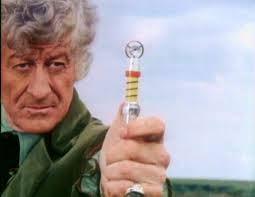 |
| 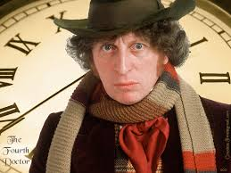 | 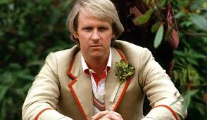 | 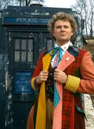 |
| 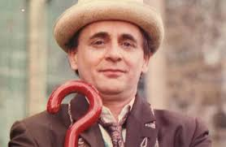 | 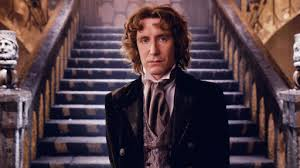 | 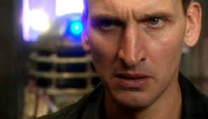 |
| 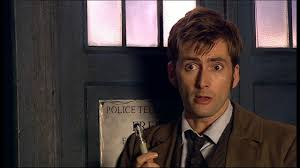 | 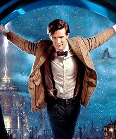 | 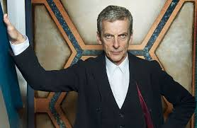 |
It is a mighty thing to love a doctor. They usually bring you pain and bad news. Their rooms are usually cold and scary. But this docotor, our doctor, he is a force to be reckoned with. And he's awesome and loves to be loved. I am talking about The Doctor, who is an alien from Gallifrea. He's going on 1300 years old, and he's often lonely.
But he has found a solution. He has found his companionsn. We all love them. Even though you might kind of hate them in the beginning, they grow on you. And it's to completely heart breaking when they die. I mean it rips our soul apart to see them leave. We grieve with him.
Yes, we all know The Doctor is amaz-balls. Sometimes he's wildly sexy, other times you want to throw him out the TARDIS mid-travel. But there has to be a magic behind what we see. There are people who make The Doctor visiable to us. I'm talking about the actors!